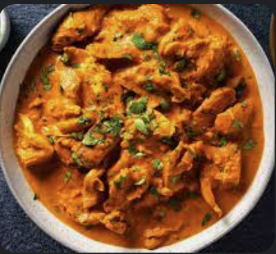

Tikka Masala

A little taste from India
Chicken marinated in a delicious blend of spices, combined with a
mouth-watering sauce comprised of delectable ingredients.
This dish will have you coming back for more!
Ingredients
- Chicken thighs
- Greek yogurt
- Garam masala
- Half white onion
- Garlic
- Cayenne pepper
- Turmeric
- Pasata
- Whole milk
- Butter
- Cumin
- Garlic Powder
Steps
- Marinade Chicken thighs with two spoonfulls of greek yogurt and
1/4 tsp of garam masala
- Brown chicken in pan for 1 min each side and remove
- Dice onion
- Dice garlic
- Brown garlic and onions
- Add 1/4 tsp garam masala
- Add 1/4 tsp cayenne pepper
- Add 1/4 tsp turmeric
- Add 1/4 tsp cumin
- Once seasonings are added, add 100g of pasata
- Add 100g of whole milk
- Add 2 Tbsp of butter
- Add chicken back to pan and let simmer for 3-5 mins